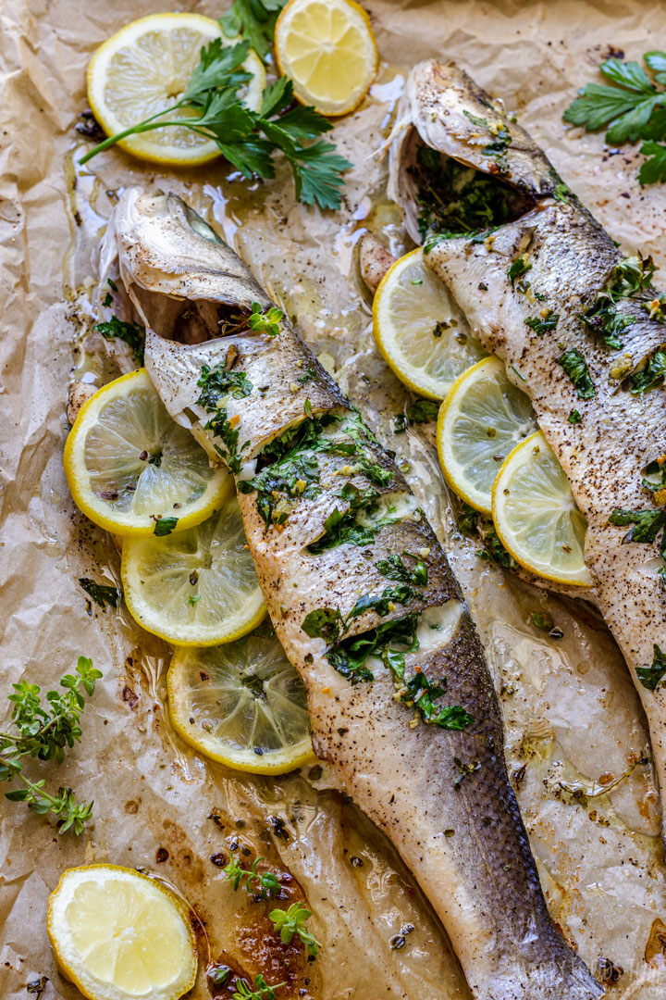

Oven Sea Bass

Description
This oven-baked whole sea bass is a simple yet flavorful meal that's perfect for any night of the week.
With just a handful of ingredients, it delivers fresh, delicious results with minimal effort.
Preparation takes only 10 minutes, and the fish cooks quickly in the oven, making it an easy choice for a fast dinner.
The straightforward recipe lets the natural taste of the sea bass shine through.
Ingredients
- 1 whole sea bass
- 2 tbsp olive oil
- 1 lemon, sliced
- 2 cloves garlic, minced
- 1 tsp dried oregano
- Fresh parsley for garnish
- Salt and pepper to taste
Steps
- Preheat the oven to 375°F (190°C).
- Rinse the sea bass under cold water and pat it dry.
- Place the sea bass on a baking sheet.
- Drizzle with olive oil and season with salt and pepper.
- Stuff the cavity with lemon slices and garlic.
- Bake for 12-15 minutes, or until the fish flakes easily with a fork.
- Garnish with fresh parsley before serving.
Home